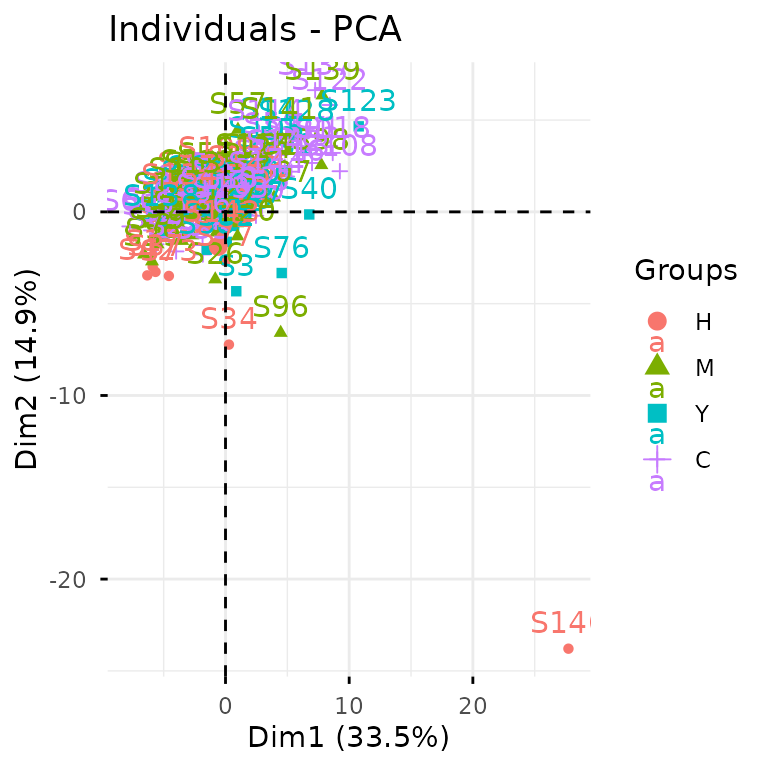
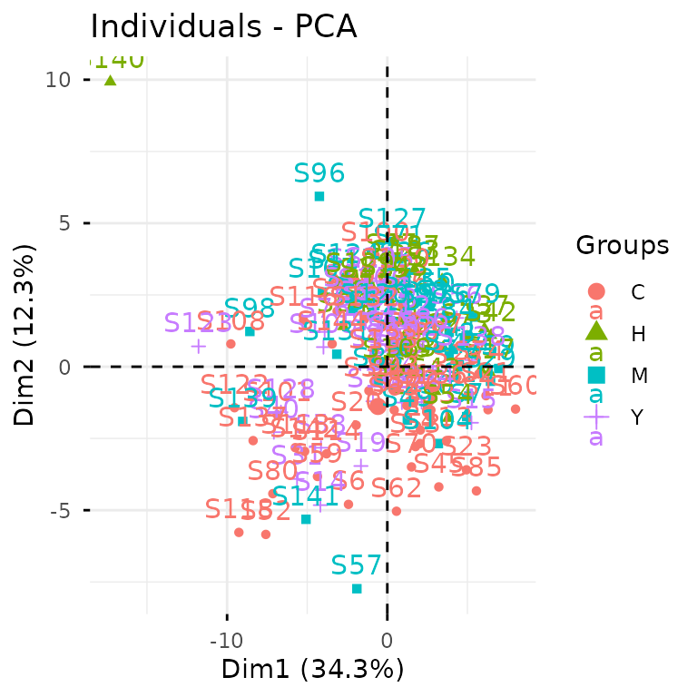
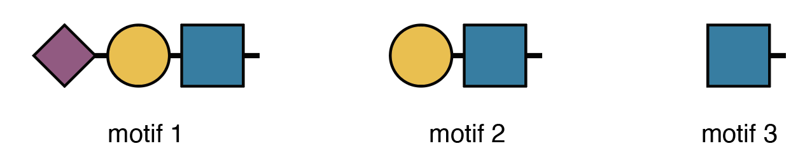

Case Study: Glycomics
case-study-2.RmdThis vignette walks you through a complete glycomics analysis using
glycoverse. We’ll explore the full spectrum of glycomics
data analysis, from data loading and preprocessing to statistical
analysis and visualization. We’ll also dive into advanced glycan
structure analysis, including motif quantification and derived trait
analysis. Ready to dive in? Let’s go!
Heads up: glycoverse is built on
tidy principles throughout. If you’re new to
tidyverse data analysis, we highly recommend checking out
Hadley Wickham’s excellent R for Data
Science. Trust us, it’s worth the investment!
Quick readiness check:
- What’s a
tibble? - How do you filter rows in a
tibble? - What’s the modern alternative to
forloops? - What’s the
%>%operator? Do we still need it? - What makes data “tidy”?
TL;DR
In case you’re in a hurry…
# Load the packages
library(tidyverse)
library(glycoverse)
# Preprocess the data
clean_exp <- auto_clean(real_experiment2)
# Perform PCA
pca_res <- gly_pca(clean_exp)
autoplot(pca_res)
# Perform differential expression analysis
limma_res <- gly_limma(clean_exp)
get_tidy_result(limma_res)
# Perform motif analysis
motifs <- c(
motif1 = "Neu5Ac(??-?)Gal(??-?)GlcNAc(??-",
motif2 = "Gal(??-?)GlcNAc(??-",
motif3 = "GlcNAc(??-"
)
motif_exp <- quantify_motifs(clean_exp, motifs)
motif_anova_res <- gly_anova(motif_exp)
get_tidy_result(motif_anova_res, "main_test")
# Perform derived trait analysis
trait_exp <- derive_traits(clean_exp)
trait_anova_res <- gly_anova(trait_exp)
get_tidy_result(trait_anova_res, "main_test")Loading the Packages
We first load the tidyverse package, as usual.
library(tidyverse)
#> ── Attaching core tidyverse packages ──────────────────────── tidyverse 2.0.0 ──
#> ✔ dplyr 1.1.4 ✔ readr 2.1.6
#> ✔ forcats 1.0.1 ✔ stringr 1.6.0
#> ✔ ggplot2 4.0.1 ✔ tibble 3.3.0
#> ✔ lubridate 1.9.4 ✔ tidyr 1.3.1
#> ✔ purrr 1.2.0
#> ── Conflicts ────────────────────────────────────────── tidyverse_conflicts() ──
#> ✖ dplyr::filter() masks stats::filter()
#> ✖ dplyr::lag() masks stats::lag()
#> ℹ Use the conflicted package (<http://conflicted.r-lib.org/>) to force all conflicts to become errorsJust like tidyverse, glycoverse is a
meta-package that loads a collection of specialized packages all at
once.
library(glycoverse)
#> ── Attaching core glycoverse packages ────────────────────── glycoverse 0.2.0 ──
#> ✔ glyclean 0.9.1 ✔ glyparse 0.5.3
#> ✔ glydet 0.6.5 ✔ glyread 0.8.2
#> ✔ glydraw 0.0.0.9000 ✔ glyrepr 0.9.0
#> ✔ glyexp 0.10.4 ✔ glystats 0.5.5
#> ✔ glymotif 0.11.2 ✔ glyvis 0.4.1
#> ── Conflicts ───────────────────────────────────────── glycoverse_conflicts() ──
#> ✖ glyclean::aggregate() masks stats::aggregate()
#> ✖ dplyr::filter() masks stats::filter()
#> ✖ lubridate::intersect() masks dplyr::intersect(), base::intersect()
#> ✖ dplyr::lag() masks stats::lag()
#> ✖ glyexp::select_var() masks dplyr::select_var()
#> ✖ lubridate::setdiff() masks dplyr::setdiff(), base::setdiff()
#> ✖ dplyr::setequal() masks base::setequal()
#> ✖ lubridate::union() masks dplyr::union(), base::union()
#> ℹ Use the conflicted package (<http://conflicted.r-lib.org/>) to force all conflicts to become errorsReading the Data
Data import is typically your first step in any analysis. For this
tutorial, we’ll use the real_experiment2 dataset that comes
with glyexp. This is a real-world N-glycomics dataset from
144 patients across four liver conditions: healthy controls (H),
hepatitis (M), cirrhosis (Y), and hepatocellular carcinoma (C).
real_experiment2
#>
#> ── Glycomics Experiment ────────────────────────────────────────────────────────
#> ℹ Expression matrix: 144 samples, 67 variables
#> ℹ Sample information fields: group <fct>
#> ℹ Variable information fields: glycan_composition <comp>, glycan_structure <struct>For your own glycomics projects, you can create an
experiment() object manually. See this
document for more details.
The real_experiment2 object is an
experiment() object. If you’ve worked with
SummarizedExperiment from Bioconductor, think of
experiment() as its tidy cousin. Essentially, it’s a smart
data container that manages three key components:
- Expression matrix: quantitative data with samples as columns and variables as rows
- Sample information: a tibble with sample metadata (group, batch, demographics, etc.)
- Variable information: a tibble with feature metadata (glycan compositions, glycan structures, etc.)
You can get these data components by using
get_expr_mat(), get_sample_info(), and
get_var_info().
get_expr_mat(real_experiment2)[1:5, 1:5]
#> S1 S2 S3 S4 S5
#> V1 1354.352 1884.387 1389.444 2034.693 1472.504
#> V2 3315.779 2500.308 1247.036 3102.668 2903.602
#> V3 6940.940 5911.016 1686.319 4071.061 4349.991
#> V4 4437.816 7535.886 2053.077 4773.249 3142.817
#> V5 1346.274 1663.375 1043.464 1765.550 1184.083
get_sample_info(real_experiment2)
#> # A tibble: 144 × 2
#> sample group
#> <chr> <fct>
#> 1 S1 H
#> 2 S2 H
#> 3 S3 Y
#> 4 S4 C
#> 5 S5 H
#> 6 S6 C
#> 7 S7 M
#> 8 S8 C
#> 9 S9 M
#> 10 S10 M
#> # ℹ 134 more rows
get_var_info(real_experiment2)
#> # A tibble: 67 × 3
#> variable glycan_composition glycan_structure
#> <chr> <comp> <struct>
#> 1 V1 Man(3)GlcNAc(3) GlcNAc(?1-?)Man(?1-?)[Man(?1-?…
#> 2 V2 Man(3)GlcNAc(7) GlcNAc(?1-?)[GlcNAc(?1-?)]Man(…
#> 3 V3 Man(5)GlcNAc(2) Man(?1-?)[Man(?1-?)]Man(?1-?)[…
#> 4 V4 Man(4)Gal(2)GlcNAc(4)Neu5Ac(2) Neu5Ac(?2-?)Gal(?1-?)GlcNAc(?1…
#> 5 V5 Man(3)Gal(1)GlcNAc(3) Gal(?1-?)GlcNAc(?1-?)Man(?1-?)…
#> 6 V6 Man(3)Gal(2)GlcNAc(4)Fuc(2) Gal(?1-?)GlcNAc(?1-?)Man(?1-?)…
#> 7 V7 Man(3)GlcNAc(3)Fuc(1) GlcNAc(?1-?)Man(?1-?)[Man(?1-?…
#> 8 V8 Man(3)GlcNAc(4) GlcNAc(?1-?)Man(?1-?)[GlcNAc(?…
#> 9 V9 Man(3)Gal(2)GlcNAc(5)Neu5Ac(1) Neu5Ac(?2-?)Gal(?1-?)GlcNAc(?1…
#> 10 V10 Man(3)Gal(1)GlcNAc(5)Fuc(1)Neu5Ac(1) Neu5Ac(?2-?)Gal(?1-?)GlcNAc(?1…
#> # ℹ 57 more rowsFor a deeper dive into experiment() objects, check out
Get
Started with glyexp.
Data Preprocessing
Raw quantification data needs preprocessing before analysis—that’s
just a fact of life in omics. Typical steps include normalization,
missing value imputation, and batch effect correction. Rather than
making you implement these tedious steps manually, glyclean
provides a comprehensive preprocessing pipeline. Just call
auto_clean() on your experiment() object and
you’re good to go.
clean_exp <- auto_clean(real_experiment2)
#>
#> ── Removing variables with too many missing values ──
#>
#> ℹ No QC samples found. Using all samples.
#> ℹ Applying preset "discovery"...
#> ℹ Total removed: 10 (14.93%) variables.
#> ✔ Variable removal completed.
#>
#> ── Normalizing data ──
#>
#> ℹ No QC samples found. Using default normalization method based on experiment type.
#> ℹ Experiment type is "glycomics". Using `normalize_median_quotient()` + `normalize_total_area()`.
#> ✔ Normalization completed.
#>
#> ── Normalizing data (Total Area) ──
#>
#> ✔ Total area normalization completed.
#>
#> ── Imputing missing values ──
#>
#> ℹ No QC samples found. Using default imputation method based on sample size.
#> ℹ Sample size > 100, using `impute_miss_forest()`.
#> ✔ Imputation completed.
#>
#> ── Correcting batch effects ──
#>
#> ℹ Batch column not found in sample_info. Skipping batch correction.
#> ✔ Batch correction completed.Your data is now analysis-ready!
Want to customize the preprocessing steps? See Get Started with glyclean for the full toolkit.
Statistical Analysis and Visualization
Time for the fun part—statistical analysis and visualization! We’ll
use glystats for the number crunching and
glyvis to make sense of the results visually.
Let’s kick off with PCA to get a bird’s-eye view of our data structure.
plot_pca(clean_exp) # from `glyvis`
glyvis isn’t designed for publication-ready figures, but
it’s perfect for quick exploratory visualization. Behind the scenes,
plot_pca() calls gly_pca() from
glystats and renders the results.
You can also break this down into separate steps:
pca_res <- gly_pca(clean_exp) # from `glystats`
autoplot(pca_res) # from `glyvis`
We actually recommend the two-step approach, since it gives you more
flexibility with the results. You can create custom ggplot2
visualizations for publications or extract the underlying data when
reviewers ask for it.
glystats covers virtually all standard omics analyses.
All functions follow the same naming pattern:
gly_xxx()—think gly_anova(),
gly_ttest(), gly_roc(),
gly_cox(), gly_wgcna(), and so on. They all
take an experiment() object as their first argument.
The return format is consistent across all functions—a list with two components:
-
tidy_result: cleaned-up tibbles in tidy format. We’ve done the heavy lifting of organizing messy statistical output for you. -
raw_result: the original statistical objects. These are available when you need to dig deeper or perform advanced analyses.
glystats provides two helper functions to get the tidy
result tibble and the raw result list from a glystats result object:
get_tidy_result() and get_raw_result(). Let’s
now see what the samples tibble looks like:
get_tidy_result(pca_res, "samples") # many tibbles, so we specify one of them
#> # A tibble: 8,208 × 4
#> sample group PC value
#> <chr> <fct> <dbl> <dbl>
#> 1 S1 H 1 -0.932
#> 2 S1 H 2 -1.75
#> 3 S1 H 3 0.530
#> 4 S1 H 4 1.83
#> 5 S1 H 5 -1.10
#> 6 S1 H 6 -2.44
#> 7 S1 H 7 -1.62
#> 8 S1 H 8 -1.54
#> 9 S1 H 9 -1.13
#> 10 S1 H 10 0.715
#> # ℹ 8,198 more rowsNotice the “group” column? That’s glystats being
helpful— it automatically pulls relevant metadata from your
experiment() object and includes it in the results wherever
it makes sense.
Back to that autoplot() magic we saw earlier. It
automatically recognizes different glystats result types
and plots accordingly— no manual specification needed. The plots won’t
win any beauty contests, but they’ll get your data insights across
fast.
Now let’s dive into differential expression analysis using the
tried-and-true limma package.
limma_res <- gly_limma(clean_exp, contrasts = "H_vs_C") # from `glystats`
#> ℹ Number of groups: 4
#> ℹ Groups: "H", "M", "Y", and "C"
#> ℹ Pairwise comparisons will be performed, with levels coming first as reference groups.
get_tidy_result(limma_res) # only one tibble here
#> # A tibble: 57 × 11
#> variable glycan_composition glycan_structure log2fc AveExpr t p_val
#> <chr> <comp> <struct> <dbl> <dbl> <dbl> <dbl>
#> 1 V1 Man(3)GlcNAc(3) GlcNAc(?1-?)Man… -3.08e-4 1.44e-3 -1.58 0.116
#> 2 V2 Man(3)GlcNAc(7) GlcNAc(?1-?)[Gl… -3.06e-4 2.63e-3 -1.44 0.153
#> 3 V3 Man(5)GlcNAc(2) Man(?1-?)[Man(?… 4.45e-4 5.70e-3 0.820 0.414
#> 4 V4 Man(4)Gal(2)GlcNAc(… Neu5Ac(?2-?)Gal… -1.44e-3 4.49e-3 -1.96 0.0523
#> 5 V5 Man(3)Gal(1)GlcNAc(… Gal(?1-?)GlcNAc… -2.59e-4 1.35e-3 -1.75 0.0831
#> 6 V6 Man(3)Gal(2)GlcNAc(… Gal(?1-?)GlcNAc… -9.80e-5 1.61e-3 -0.601 0.549
#> 7 V7 Man(3)GlcNAc(3)Fuc(… GlcNAc(?1-?)Man… -1.59e-4 8.85e-4 -1.02 0.309
#> 8 V8 Man(3)GlcNAc(4) GlcNAc(?1-?)Man… -9.23e-5 1.11e-3 -0.521 0.603
#> 9 V9 Man(3)Gal(2)GlcNAc(… Neu5Ac(?2-?)Gal… -7.06e-4 2.37e-2 -0.859 0.392
#> 10 V10 Man(3)Gal(1)GlcNAc(… Neu5Ac(?2-?)Gal… 7.95e-4 4.50e-3 2.13 0.0345
#> # ℹ 47 more rows
#> # ℹ 4 more variables: p_adj <dbl>, b <dbl>, ref_group <chr>, test_group <chr>Excellent! Now let’s identify significantly differentially expressed glycans between HCC and healthy samples.
limma_res |>
get_tidy_result() |>
filter(p_adj < 0.05) |>
select(glycan_composition, p_adj, log2fc)
#> # A tibble: 17 × 3
#> glycan_composition p_adj log2fc
#> <comp> <dbl> <dbl>
#> 1 Man(3)Gal(3)GlcNAc(5)Neu5Ac(1) 0.0474 -0.00123
#> 2 Man(3)GlcNAc(4)Fuc(1) 0.000000850 0.0170
#> 3 Man(3)Gal(1)GlcNAc(5)Neu5Ac(1) 0.0474 0.00100
#> 4 Man(3)GlcNAc(5)Fuc(1) 0.000692 0.00287
#> 5 Man(3)Gal(1)GlcNAc(5)Fuc(1) 0.00577 0.00485
#> 6 Man(3)Gal(2)GlcNAc(4)Neu5Ac(2) 0.0474 -0.0349
#> 7 Man(3)Gal(2)GlcNAc(4)Fuc(1)Neu5Ac(2) 0.0474 0.0111
#> 8 Man(3)Gal(1)GlcNAc(5) 0.0282 0.00111
#> 9 Man(3)Gal(1)GlcNAc(4)Fuc(1) 0.0248 0.0134
#> 10 Man(3)Gal(2)GlcNAc(4)Neu5Ac(1) 0.00225 -0.0146
#> 11 Man(3)Gal(3)GlcNAc(5)Neu5Ac(2) 0.0000386 -0.00485
#> 12 Man(3)Gal(3)GlcNAc(5)Fuc(1)Neu5Ac(2) 0.000000876 0.00399
#> 13 Man(3)Gal(3)GlcNAc(5)Neu5Ac(3) 0.00113 -0.0268
#> 14 Man(3)Gal(4)GlcNAc(6)Neu5Ac(2) 0.0282 0.00119
#> 15 Man(3)Gal(3)GlcNAc(5)Fuc(1)Neu5Ac(3) 0.0000000303 0.0339
#> 16 Man(5)Gal(1)GlcNAc(4)Neu5Ac(1) 0.0332 -0.00204
#> 17 Man(3)Gal(3)GlcNAc(5)Fuc(2)Neu5Ac(3) 0.00146 0.00182For the full statistical arsenal, check out Get Started with glystats and Get Started with glyvis.
Advanced Motif Analysis
Up to now, we’ve covered standard glycomics workflows. While
glycoverse certainly streamlines these analyses, it truly
shines when it comes to advanced glycan structure analysis.
Before diving into motifs, let’s get acquainted with
glyrepr::glycan_structure() vectors.
clean_exp |>
get_var_info() |>
pull(glycan_structure)
#> <glycan_structure[57]>
#> [1] GlcNAc(?1-?)Man(?1-?)[Man(?1-?)]Man(?1-?)GlcNAc(?1-?)GlcNAc(?1-
#> [2] GlcNAc(?1-?)[GlcNAc(?1-?)]Man(?1-?)[GlcNAc(?1-?)][GlcNAc(?1-?)[GlcNAc(?1-?)]Man(?1-?)]Man(?1-?)GlcNAc(?1-?)GlcNAc(?1-
#> [3] Man(?1-?)[Man(?1-?)]Man(?1-?)[Man(?1-?)]Man(?1-?)GlcNAc(?1-?)GlcNAc(?1-
#> [4] Neu5Ac(?2-?)Gal(?1-?)GlcNAc(?1-?)[Neu5Ac(?2-?)Gal(?1-?)GlcNAc(?1-?)]Man(?1-?)[Man(?1-?)Man(?1-?)]Man(?1-?)GlcNAc(?1-?)GlcNAc(?1-
#> [5] Gal(?1-?)GlcNAc(?1-?)Man(?1-?)[Man(?1-?)]Man(?1-?)GlcNAc(?1-?)GlcNAc(?1-
#> [6] Gal(?1-?)GlcNAc(?1-?)Man(?1-?)[Fuc(?1-?)[Gal(?1-?)]GlcNAc(?1-?)Man(?1-?)]Man(?1-?)GlcNAc(?1-?)[Fuc(?1-?)]GlcNAc(?1-
#> [7] GlcNAc(?1-?)Man(?1-?)[Man(?1-?)]Man(?1-?)GlcNAc(?1-?)[Fuc(?1-?)]GlcNAc(?1-
#> [8] GlcNAc(?1-?)Man(?1-?)[GlcNAc(?1-?)Man(?1-?)]Man(?1-?)GlcNAc(?1-?)GlcNAc(?1-
#> [9] Neu5Ac(?2-?)Gal(?1-?)GlcNAc(?1-?)Man(?1-?)[GlcNAc(?1-?)][Gal(?1-?)GlcNAc(?1-?)Man(?1-?)]Man(?1-?)GlcNAc(?1-?)GlcNAc(?1-
#> [10] Neu5Ac(?2-?)Gal(?1-?)GlcNAc(?1-?)Man(?1-?)[GlcNAc(?1-?)][GlcNAc(?1-?)Man(?1-?)]Man(?1-?)GlcNAc(?1-?)[Fuc(?1-?)]GlcNAc(?1-
#> ... (47 more not shown)
#> # Unique structures: 57Just like integer() and character(),
glycan_structure() is a specialized vector type. Some
software (like pGlyco3 and StrucGP) outputs structural information as
text strings. When you import this data using glyread, the
glyparse package automatically converts these strings into
proper glycan_structure() vectors and stores them in the
variable information tibble. Note that not all software provides
structural data—some only give compositions.
For glycomics data, this information is hard to come by
automatically. You can do it manually by parsing the glycan structure
strings using glyparse and using
left_join_var() to join the parsed structures to the
variable information tibble.
Fortunately, our example dataset includes structural information, opening up a world of advanced analytical possibilities. Let’s explore motif analysis.
Quick note: The printed structures use IUPAC-condensed notation, which we’ll also use for defining motifs below. Don’t worry if it looks intimidating—we’ll include visual diagrams to help. That said, if you’re planning to do serious structural analysis, learning IUPAC-condensed notation is worth the investment. Check out this guide to get started—it’s easier than it looks!
Human serum N-glycans can have three types of branch terminals (ignoring a1-3 Fuc):
- A Sialyl-LacNAc motif
- A LacNAc motif without sialic acids
- Only a GlcNAc without further elongation

Here’s how we express these motifs in IUPAC-condensed notation:
motifs <- c(
motif1 = "Neu5Ac(??-?)Gal(??-?)GlcNAc(??-",
motif2 = "Gal(??-?)GlcNAc(??-",
motif3 = "GlcNAc(??-"
)The “??-?” represents unknown linkages—a common limitation in mass spectrometry data.
Here’s our research question: Which branching motif show
differential expression across conditions? Without
glycoverse, this would be a nightmare to tackle manually.
Take a moment to imagine the pain of doing this by hand!
Now, the glycoverse solution:
motif_anova_res <- clean_exp |>
quantify_motifs(motifs, alignments = "terminal") |> # quantify these motifs
gly_anova() # and perform ANOVA
#> ℹ Number of groups: 4
#> ℹ Groups: "H", "M", "Y", and "C"
#> ℹ Pairwise comparisons will be performed, with levels coming first as reference groups.
get_tidy_result(motif_anova_res, "main_test")
#> # A tibble: 3 × 10
#> variable motif term df sumsq meansq statistic p_val p_adj post_hoc
#> <chr> <chr> <chr> <dbl> <dbl> <dbl> <dbl> <dbl> <dbl> <chr>
#> 1 V1 motif1 group 3 0.0205 0.00685 1.17 0.322 0.322 NA
#> 2 V2 motif2 group 3 0.0264 0.00880 2.06 0.109 0.163 NA
#> 3 V3 motif3 group 3 0.0959 0.0320 5.60 0.00118 0.00353 H_vs_Y;H…quantify_motifs() transforms your data into a new
experiment() object. Instead of quantification of glycans,
you now have motif abundances across samples. Since it’s still an
experiment() object, all glystats functions
work seamlessly—including gly_anova().
Now we can answer our question using standard tidyverse
operations, since motif_anova_res$tidy_result$main_test is
just a regular tibble:
motif_anova_res |>
get_tidy_result("main_test") |>
filter(p_adj < 0.05)
#> # A tibble: 1 × 10
#> variable motif term df sumsq meansq statistic p_val p_adj post_hoc
#> <chr> <chr> <chr> <dbl> <dbl> <dbl> <dbl> <dbl> <dbl> <chr>
#> 1 V3 motif3 group 3 0.0959 0.0320 5.60 0.00118 0.00353 H_vs_Y;H_…Here’s another common question: Which of the three branching motifs appears the most in all glycans?
For this analysis, we don’t need motif quantification—we just need to
know which glycans have these motifs.
glymotif::add_motifs_lgl() is perfect for this.
clean_exp |>
add_motifs_lgl(motifs, alignments = "terminal") |>
get_var_info() |>
select(glycan_composition, motif1, motif2, motif3) |>
pivot_longer(-glycan_composition, names_to = "motif", values_to = "has_motif") |>
summarise(n = sum(has_motif), .by = "motif")
#> # A tibble: 3 × 2
#> motif n
#> <chr> <int>
#> 1 motif1 30
#> 2 motif2 25
#> 3 motif3 24add_motifs_lgl() adds three new TRUE/FALSE columns
(motif1, motif2, motif3) to the
variable information.
glymotif has much more to offer beyond these examples.
Dive deeper with Get
Started with glymotif.
Derived Trait Analysis
Let’s wrap up with derived traits—a clever analytical approach developed by the N-glycomics community for glycome characterization. Classic examples include:
- High-mannose glycan proportion
- Core-fucosylation rate within complex glycans
- Average sialylation per galactose residue
glydet calculates derived traits in a flash. Using it
couldn’t be simpler:
trait_exp <- derive_traits(clean_exp) # from `glydet`
trait_exp
#>
#> ── Traitomics Experiment ───────────────────────────────────────────────────────
#> ℹ Expression matrix: 144 samples, 14 variables
#> ℹ Sample information fields: group <fct>
#> ℹ Variable information fields: trait <chr>That’s it! Just like quantify_motifs(),
derive_traits() creates a new experiment()
object, but now with trait values per sample.
The variable information shows what we’re working with:
get_var_info(trait_exp)
#> # A tibble: 14 × 2
#> variable trait
#> <chr> <chr>
#> 1 V1 TM
#> 2 V2 TH
#> 3 V3 TC
#> 4 V4 MM
#> 5 V5 CA2
#> 6 V6 CA3
#> 7 V7 CA4
#> 8 V8 TF
#> 9 V9 TFc
#> 10 V10 TFa
#> 11 V11 TB
#> 12 V12 GS
#> 13 V13 AG
#> 14 V14 TSThe “trait” column lists all the derived traits we can analyze.
glydet comes with a comprehensive set of built-in
traits:
-
TM: Proportion of high-mannose glycans -
TH: Proportion of hybrid glycans
-
TC: Proportion of complex glycans -
MM: Average number of mannoses within high-mannose glycans -
CA2: Proportion of bi-antennary glycans within complex glycans -
CA3: Proportion of tri-antennary glycans within complex glycans -
CA4: Proportion of tetra-antennary glycans within complex glycans -
TF: Proportion of fucosylated glycans -
TFc: Proportion of core-fucosylated glycans -
TFa: Proportion of arm-fucosylated glycans -
TB: Proportion of glycans with bisecting GlcNAc -
SG: Average degree of sialylation per galactose -
GA: Average degree of galactosylation per antenna -
TS: Proportion of sialylated glycans
These represent the most widely used traits in glycomics literature.
Let’s identify traits with significantly different values across conditions:
trait_exp |>
gly_anova() |>
get_tidy_result("main_test") |>
filter(p_adj < 0.05)
#> ℹ Number of groups: 4
#> ℹ Groups: "H", "M", "Y", and "C"
#> ℹ Pairwise comparisons will be performed, with levels coming first as reference groups.
#> # A tibble: 8 × 10
#> variable trait term df sumsq meansq statistic p_val p_adj post_hoc
#> <chr> <chr> <chr> <dbl> <dbl> <dbl> <dbl> <dbl> <dbl> <chr>
#> 1 V5 CA2 group 3 0.00859 2.86e-3 5.56 1.23e-3 4.37e-3 M_vs_C;…
#> 2 V6 CA3 group 3 0.0206 6.88e-3 5.41 1.49e-3 4.37e-3 M_vs_C;…
#> 3 V7 CA4 group 3 0.000115 3.83e-5 3.99 9.14e-3 2.13e-2 M_vs_C
#> 4 V8 TF group 3 0.107 3.58e-2 7.88 6.81e-5 4.77e-4 H_vs_Y;…
#> 5 V9 TFc group 3 0.107 3.58e-2 7.88 6.81e-5 4.77e-4 H_vs_Y;…
#> 6 V10 TFa group 3 0.000126 4.19e-5 5.38 1.56e-3 4.37e-3 M_vs_C
#> 7 V11 TB group 3 0.0111 3.72e-3 3.57 1.58e-2 2.77e-2 H_vs_Y
#> 8 V13 AG group 3 0.00496 1.65e-3 3.62 1.48e-2 2.77e-2 H_vs_COnce again, it’s just that straightforward.
This just scratches the surface of glydet’s
capabilities. The real power lies in defining custom traits tailored to
your research questions. Explore the possibilities in Get
Started with glydet.
What’s Next?
This vignette has given you a taste of glycoverse in
action through a real-world glycomics workflow. But we’ve barely
scratched the surface! Now that you’ve got the basics down, you’re ready
to unlock the full potential of each package.
Here’s your roadmap to mastering each component:
- glyexp — Master experiment objects and data manipulation
- glyread — Import and organize glycomics data
-
glyclean
— Build custom preprocessing pipelines
- glystats — Explore the full statistical toolkit
- glyvis — Create stunning visualizations
- glymotif — Define and analyze custom motifs
- glydet — Create powerful derived traits
- glyenzy — Explore enzyme-substrate relationships (we didn’t cover this one, but it’s fascinating!)
- glyrepr — Master glycan structure representation
- glyparse — Parse and convert structural formats
- glydraw — Draw glycan structures
- glydb — Access glycan databases
- glyanno — Annotate glycan structures
- glysmith — Master the full analytical pipeline
Happy glycan hunting! 🧬